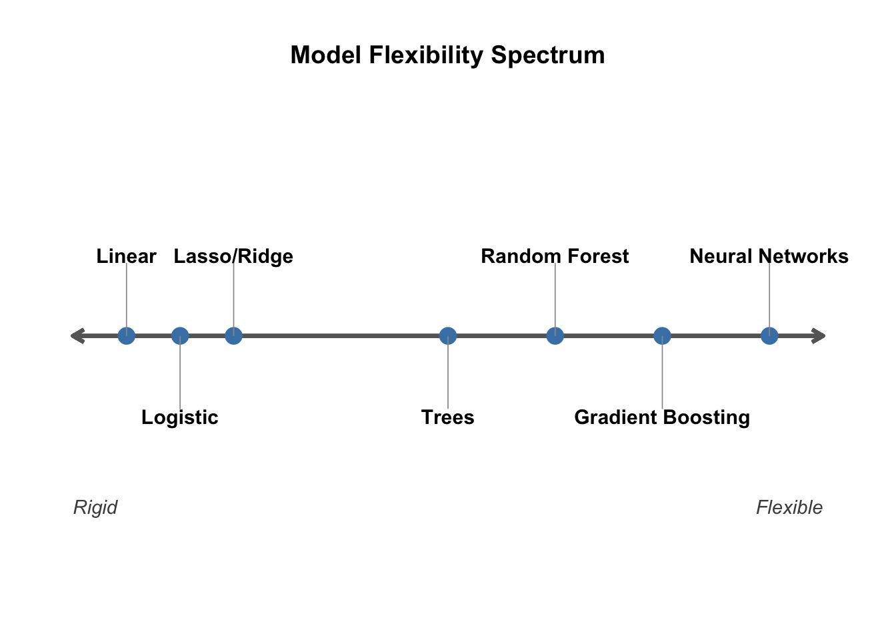
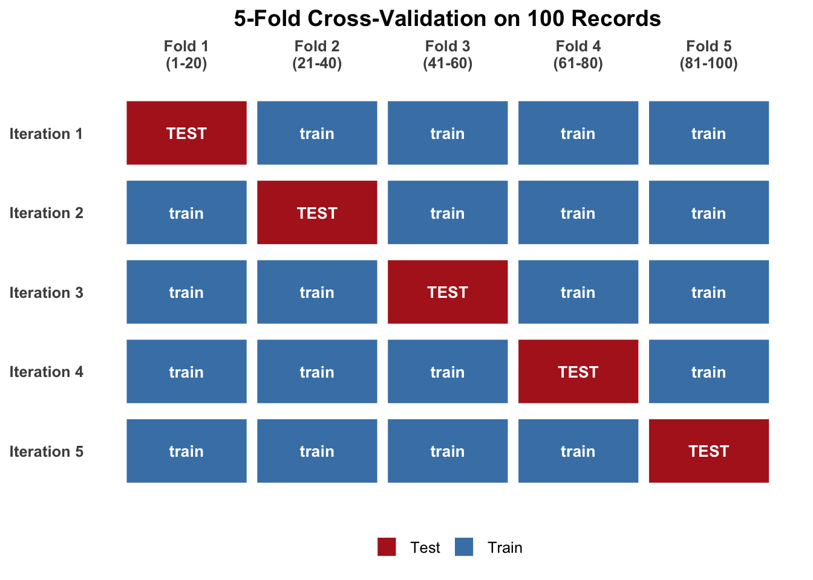

Week 5
Where do rents exceed our expectations?
GEOID |
med_rent |
med_inc |
pct_renters |
pct_ba |
n_stations |
rent_cv |
geometry |
|---|---|---|---|---|---|---|---|
100 |
1650 |
8200 |
0.71 |
0.64 |
3 |
9.8 |
((...)) |
| Income | Rent |
|---|---|
| $3,000 | $1,000 |
| $100,000 | $3,000 |
| $250,000 | $6,000 |
We can use a linear regression equation to estimate rent based on income:
\[ y = f(x) + \epsilon \]
The error \(\epsilon\) represents everything that can’t be explained by all of the other predictors.
However, linear isn’t the only option for machine learning! We can use an entire spectrum of models.
In parametric models, you assume there is a linear relationship between predictors. In non-parametric models, the model grows as you feed it more data. It can be a more “wiggly” line. Because of this, it’s harder to “look inside” the model via traditional regression outputs.
Evaluating a Model
In traditional statistics, we look at the \(R^2\) to evaluate a simple/multiple regression. For example, if \(R^2=0.3\), we can say that 30% of the variance in the points can be explained by the model.
In prediction, what we really want to know is how well a model can predict things we have never seen before.
In traditional statistical inference…
The gaps between the observed and predicted values are known as residuals. The method for optimizing the line in a linear regression model is known as Least Squares Regression, as we are minimizing the sum of squared errors \(\text{SSE}\).
When we estimate this in R, we use this function:
m1 <- lm(med_rent ~ med_inc, data = tracts)
summary(m1) Inside the summary() output, we get a lot of statistics such as the ESTIMATE, the STANDARD ERROR, the INTERCEPT, the t-value, and the p-value.
The uncertainty in \(y\) will go into the residuals because we’re only able to explain or predict systematic variation, not noise. The noise in \(x\) tends to flatten the slope of the line.
In machine learning…
As opposed to traditional statistics, with machine learning, we tend to keep predictors no matter their significance IF they increase our prediction!
In traditional statistics, \(R^2\) is calculated based on the data it was fit to. With prediction, we aim to explain data we have not seen. This is called Test/Train.
There are many ways to set up testing and training data. The common rule of thumb is to use 80% of existing data to train the model on, and the resulting 20% will be used to test the fit of the model.
We then calculate the Root Mean Squared Error (RMSE) that takes the predicted estimate vs. actual data and squares it. For example, you can say that your model is off by about $300. This is the same as a Loss Function.
Beyond Test/Train
What if there was something weird about the data that we reserved for the 20%? This is where different kinds of cross validation (CV) comes in.
The \(k\)-fold method is a different way to split the data. A “fold” is a way to break up the data. Let’s say we have 100 records and we want to split the data in to 5 folds.
- We save the first 20 records and don’t train the model on it.
- We test how well the model can predict rents based on the unseen data and test the RMSE.
- We then do it again, this time the next 20 records are tested and the other folds are used to create a model.
- For 100 records and 5 folds, this is done 5 times with an average model taken.

Overfitting
Let’s say you come up with a model that’s so good at predicting. The problem with overfitting is that it learns the noise so well that it is amazing at predicting seen data, but not at predicting unseen data.
This becomes especially evident when you do cross-validation to test out your model.